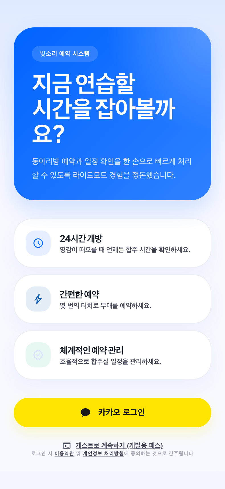
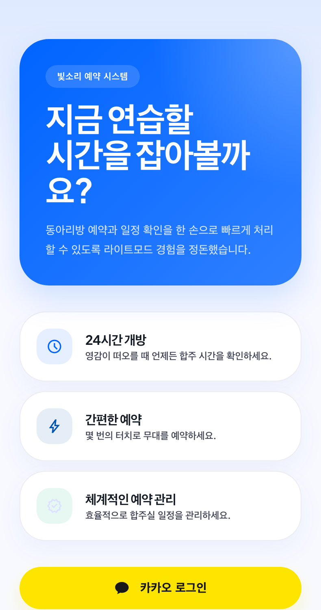

Design Improvement: Login Screen
TL;DR
로그인 화면은 더 화려하게 만들기보다, 첫 화면에서 "지금 무엇을 할 수 있는지"와 "왜 로그인해야 하는지"를 바로 보여주는 쪽이 맞습니다. 히어로 카드를 줄이고, 예약 현황 미리보기와 카카오 로그인 CTA를 첫 viewport 안에 안정적으로 고정하는 개편을 권합니다.
로그인 화면은 더 화려하게 만들기보다, 첫 화면에서 "지금 무엇을 할 수 있는지"와 "왜 로그인해야 하는지"를 바로 보여주는 쪽이 맞습니다. 히어로 카드를 줄이고, 예약 현황 미리보기와 카카오 로그인 CTA를 첫 viewport 안에 안정적으로 고정하는 개편을 권합니다.
Assumptions
- 이 앱은 단일 동아리용 합주실/동아리방 예약 PWA입니다.
- 현재 인증 진입점은 카카오 로그인이 주 경로이고, 개발용 익명 로그인은 운영 화면에서 숨겨집니다.
- 비로그인 예약 현황 공개는 정책 결정이 필요합니다. 공개한다면 개인 이름/초대자 정보 없이 "빈 시간"만 보여주는 범위로 제한해야 합니다.
Current State


Improvement Ideas
1. Hero를 줄이고 예약 가능 시간 미리보기로 바꾸기
상단을 40% 이하로 줄이고, 오늘/내일의 예약 가능 시간 칩 또는 미니 캘린더 프리뷰를 보여주면 앱의 목적이 즉시 전달됩니다.


+--------------------------------+ | 빛소리 예약 | | 오늘 합주실을 바로 확인하세요 | | [오늘] 18:00 19:30 21:00 | | 카카오 로그인 | +--------------------------------+
2. 3개 기능 카드를 로그인 이점 3칩으로 압축하기
카드 3개를 "빈 시간 확인", "중복 예약 방지", "내 예약 모아보기" 같은 짧은 결과 중심 칩으로 바꾸면 CTA가 위로 올라옵니다.


+--------------------------------+ | 빈 시간 확인 | 중복 방지 | | 내 예약 보기 | 승인 부원용 | +--------------------------------+
3. 카카오 로그인 버튼은 공식 가이드에 맞춰 낮고 단단하게 정리하기
노란색은 유지하되, pill 형태와 강한 그림자를 줄이고 Kakao guide의 색상, 심볼, 라벨, 12px radius를 기준으로 맞춥니다.
4. 게스트는 개발용과 운영용을 분리해서 설계하기
운영에 미리보기가 필요하면 "예약 현황 먼저 보기"로 별도 정책을 세우고, 개인 정보 없는 availability만 노출합니다.
5. Desktop에서는 split utility layout 사용하기
데스크톱에서는 모바일 카드 확대가 아니라 좌측 예약 요약, 우측 로그인 패널로 분리합니다.
What's Working
- 카카오 로그인 하나로 인증 경로가 명확합니다.
- 파란 히어로와 노란 카카오 CTA의 대비는 강합니다.
- 법적 문구와 약관/개인정보 링크가 이미 존재합니다.
- 모바일 폭에서 큰 레이아웃 깨짐은 없습니다.
Implementation Plan
- 상단 히어로를 compact header + 예약 프리뷰로 교체합니다.
- 기능 카드를 chip/mini benefit row로 압축합니다.
- 카카오 버튼을 공식 가이드 기준으로 정리합니다.
- 운영용 미리보기 여부를 결정하고 공개 범위를 제한합니다.
- 데스크톱 breakpoint에서 split layout을 적용합니다.
References
- Fever, Booking.com, Booksy, SpotHero screenshots from Lazyweb.
- Kakao Developers Design Guide
- Apple HIG: Sign in with Apple